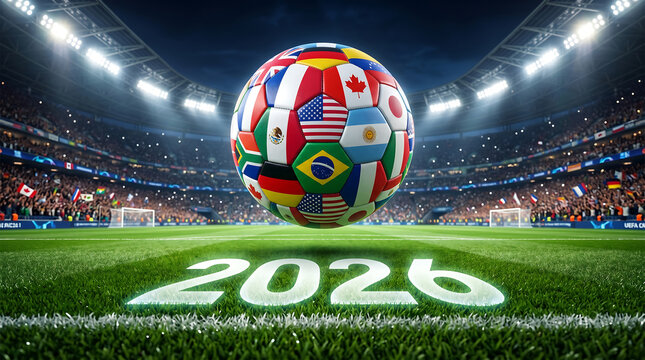

Soccer is my favorite sport because it brings people together. I enjoy the excitement of every match and how players work together. I think teamwork is one of the most important parts of soccer.
Soccer takes practice, patience, and communication. A single goal can change the entire match. My favorite part is watching a team score after a great passing play.

Built by Nguyen Phu Thanh · BMIS 235